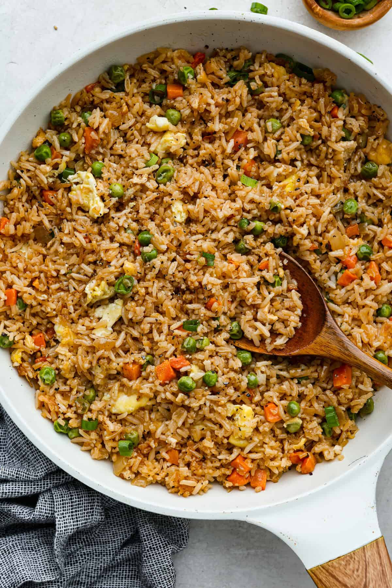

Fried Rice

Fried Rice
This Easy Fried Rice has always been one of the most-loved recipes on my site! I have made different versions, but this classic recipe is the one everyone keeps coming back to because it’s so easy and delicious!
Ingredients
- Cooked rice
- Eggs
- Peas & carrots
- Green onion
- Soy sauce
- Sesame oil
- Diced Onion
Steps
- Preheat a large skillet or wok to medium heat. Add sesame oil, chopped white onion, and frozen peas and carrots, then cook until tender..
- Slide the vegetables to the side and then pour the eggs onto the other side of the skillet. Using a spatula, scramble the eggs. Once cooked, then you can mix the eggs with the vegetables.
- Add cooked white rice to the veggie and egg mixture, then pour soy sauce on top. Stir the rice and veggie mixture until warmed through and combined.
- Top with green onions, if desired, and serve immediately.